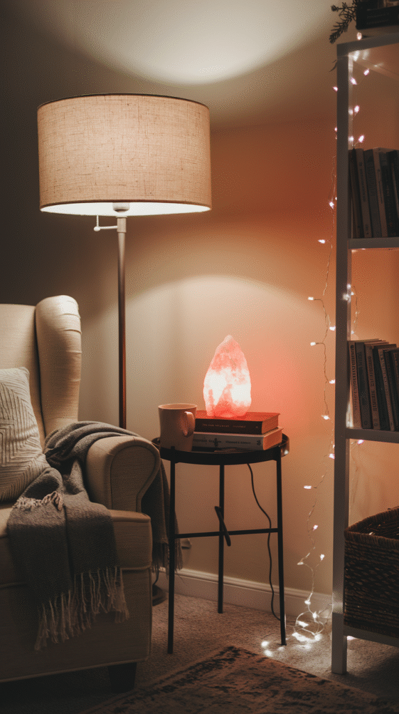
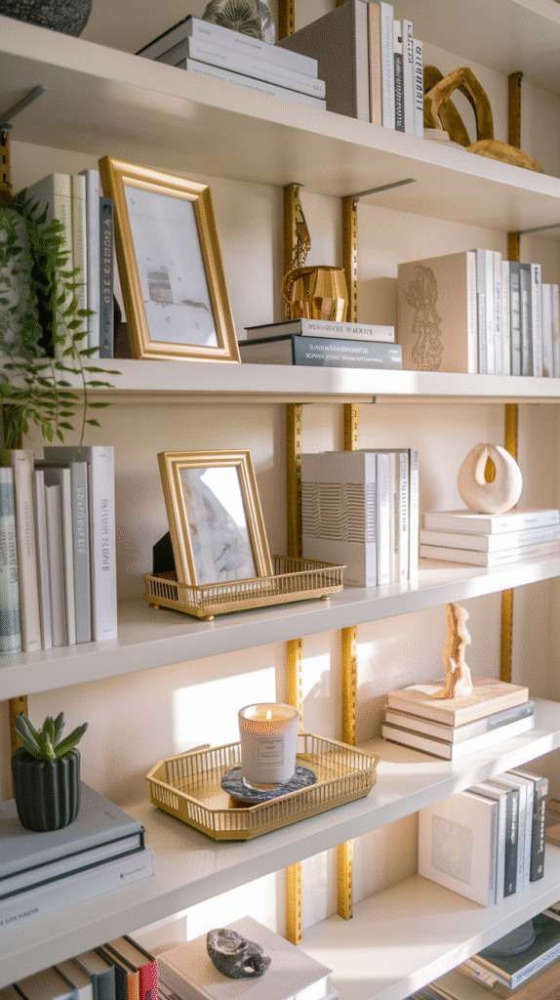
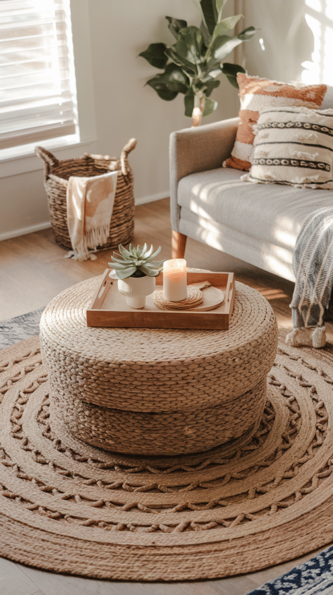
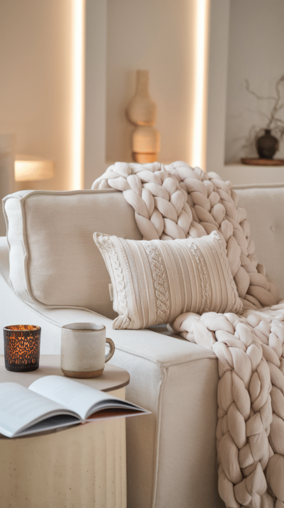
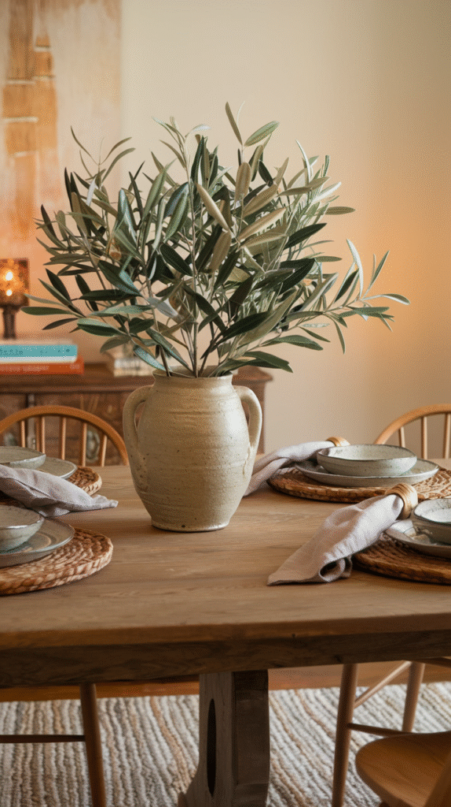
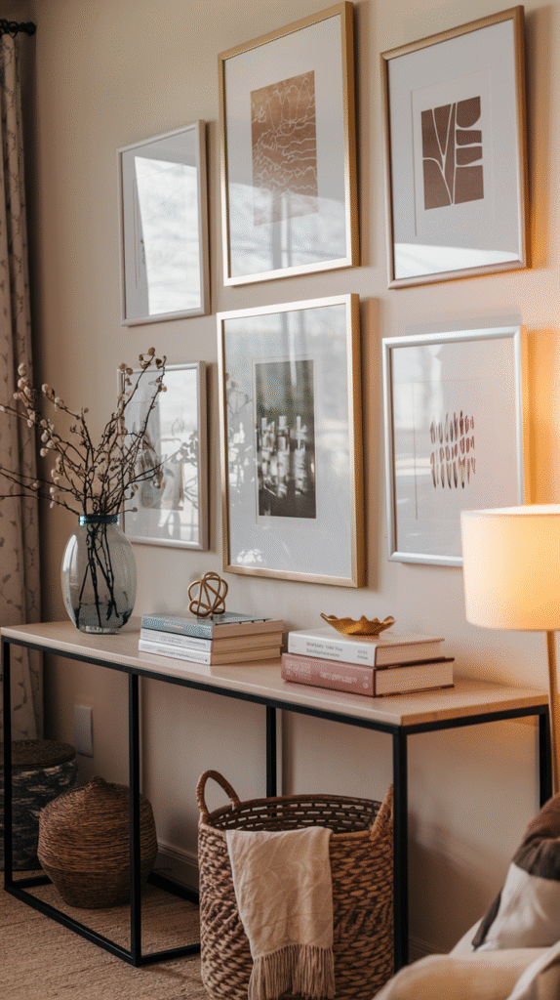
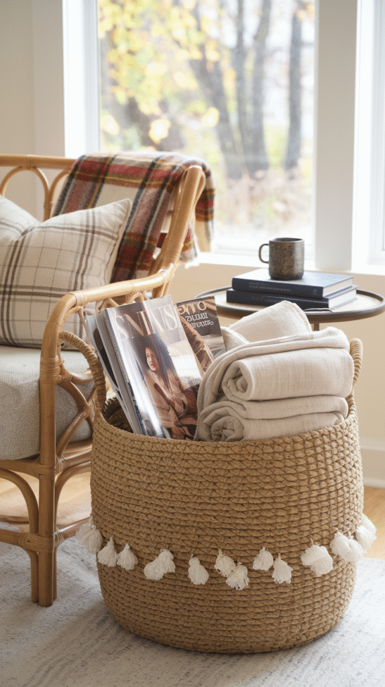
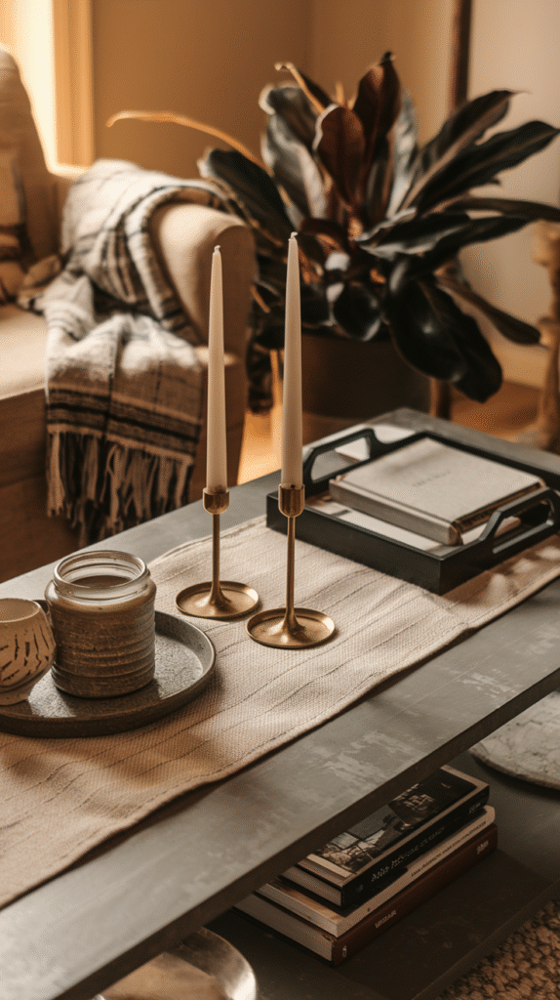
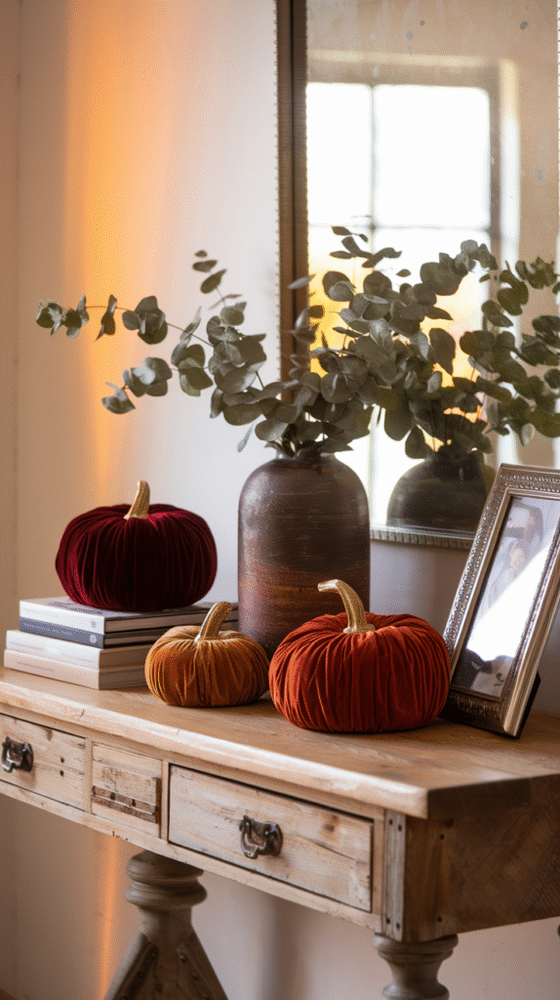
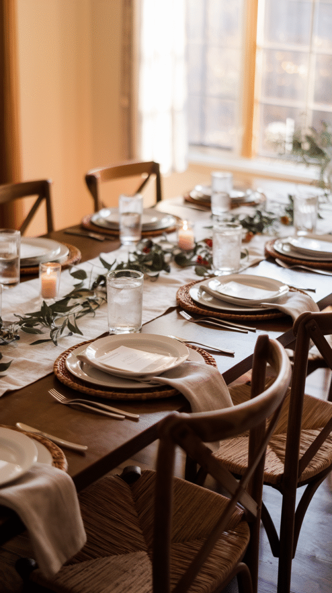

You don't need a luxury budget to make your home feel luxe for fall.
A handful of affordable categories, chosen well, will beat a few expensive pieces scattered around every time — and it's not even close.
Here are the 10 that give you the most visual payoff for the least money, without pointing you toward one specific product that's probably out of stock by the time you go looking for it anyway.

1. Start With Your Lighting
Swap a harsh overhead bulb for warm-toned lamps and a few candles, and you'll change the entire mood of a room for next to nothing.
Layer a few different light sources together — a floor lamp, a table lamp, some candlelight — and you get that cozy, moody feel people usually associate with a much pricier space.
It's also one of the fastest wins on this whole list, since most of the time it just means repositioning lamps you already own.
Honestly, lighting does more for how expensive a room feels than almost any single object you could buy.

2. Add Gold, But Just a Little
A gold-finished tray, a picture frame, maybe one small decorative object — any of these bring a sense of luxury without you having to replace every piece of hardware in the room.
A little goes a long way here. Two or three gold accents read as elegant, and somewhere around five or six starts to feel like overkill instead.
This pairs especially well with warm, neutral tones everywhere else, and it's genuinely one of the cheapest ways to sneak a little glamour into an otherwise simple space.

3. Layer Your Rugs
Lay a smaller patterned or textured rug over a larger neutral one, and you get that designer-style look for a fraction of what one big statement rug would cost you.
It's a clever trick, really — a smaller, cheaper rug suddenly makes a much bigger visual impact than it ever would sitting there alone.
Natural fiber rugs like jute or sisal work especially well as that base layer underneath your accent rug.
Done right, it reads as intentional, not like you just couldn't decide between two rugs.

4. Get a Throw Blanket With Real Texture
A thick faux fur or chunky knit throw will upgrade a sofa or chair instantly, and it doesn't cost much to do it.
The trick is prioritizing texture and visible thickness over brand name — a budget throw with real loft reads as expensive from across the room, no one's checking the label.
Drape it loosely instead of folding it into a perfect square. That relaxed look is actually part of what sells the whole effect.
This might be the highest-impact, lowest-cost item on this entire list.

5. Choose Faux Greenery That Actually Looks Real
Faux stems have gotten good enough that a well-chosen one is genuinely hard to tell from the real thing, especially from across a room.
And that solves the actual problem with seasonal greenery: it doesn't wilt, and you get to reuse it every single year after this one.
Look for stems with a bit of natural color variation instead of one flat, uniform tone. That variation is what sells the realism.
It's a one-time purchase that keeps paying off, season after season.

6. Hang One Good Art Print
A well-chosen print in a simple frame can read as an original piece from across a room, and most people won't look closely enough to tell otherwise.
Scale matters more than cost here. One appropriately sized print will beat several small, cheap ones scattered around a wall.
A matte finish and a clean frame both help a budget print avoid that obviously-mass-produced look.
It's one of the easiest ways to give a room a focal point without a major purchase behind it.

7. Bring in a Woven Basket
A woven basket adds real texture and warmth, and it also solves an actual storage problem you probably already have.
Use it for blankets, firewood, or just general living room catch-all — whatever tends to pile up on your floor.
Natural materials like rattan, seagrass, and jute read as considerably more expensive than what you'd actually pay for them.
It's rare to find a purchase that does this much styling work while also being genuinely useful.

8. Upgrade Your Candle Holders
Swap a plain candle for one sitting in an interesting holder — brass, ceramic, carved wood, whatever fits your space — and you elevate the whole look without touching the candle itself.
Vary the holder heights across a small grouping, and you'll get visual interest that one candle sitting alone just can't give you.
It's a cheap, fully reversible upgrade too. Those holders will get used well past fall.
A small swap, but one with a real return on what you spent.

9. Add Velvet Pumpkins
Velvet pumpkins read as boutique-made even at a pretty modest price point, mostly because the fabric itself is doing most of the visual work.
Group a few different sizes together on a mantel or table, and you'll get more impact than a single pumpkin sitting there alone.
Deep jewel tones — burgundy, forest green, mustard — tend to look more intentional than a bright, classic orange.
It's a small, inexpensive detail, but it photographs disproportionately well for how little it costs.

10. Style the Table, Not Just the Dinnerware
A simple table setting — a runner, a few natural elements, place settings that actually coordinate — will impress guests without you needing an expensive dinnerware set at all.
Repeat two or three colors throughout the whole setting, and you create a cohesion that reads as considered, not thrown together at the last minute.
This is really more about arrangement and restraint than it is about spending more on any individual piece.
It's a good final touch, and it's the one that pulls the whole room's seasonal look together.

You Really Don't Need the Big Budget
None of these 10 categories require much money to pull off well.
A plush throw, a few velvet pumpkins, and warmer lighting alone will get you most of the seasonal transformation most people are chasing.
Spend a little more on the one or two categories that matter most for your space, and let the smaller, cheaper details fill in everywhere else.
A room doesn't need an expensive overhaul to look like one. It just needs a few of the right small choices.